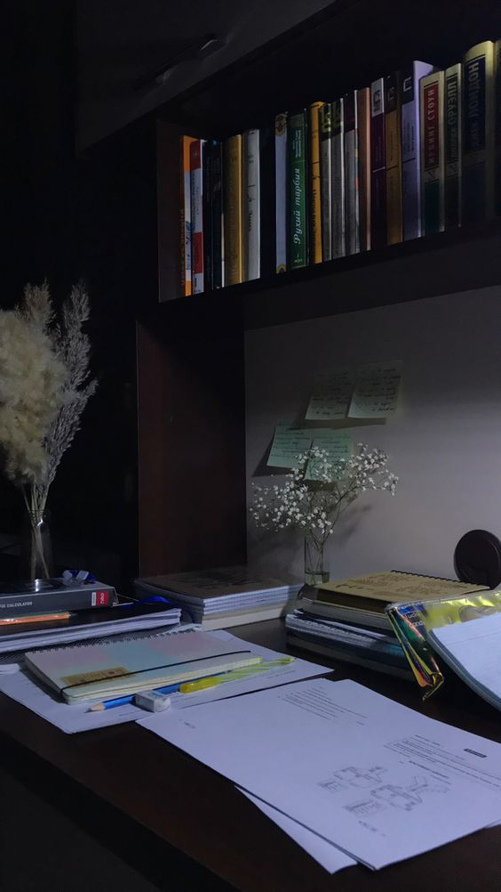

Световой год — это расстояние, которое проходит луч света за один земной год, что составляет примерно 9,7 триллиона километров.
Терция — музыкальный интервал шириной в три ступени; обозначается цифрой 3

Семестр — учебное полугодие в высших или специальных средних учебных заведениях.